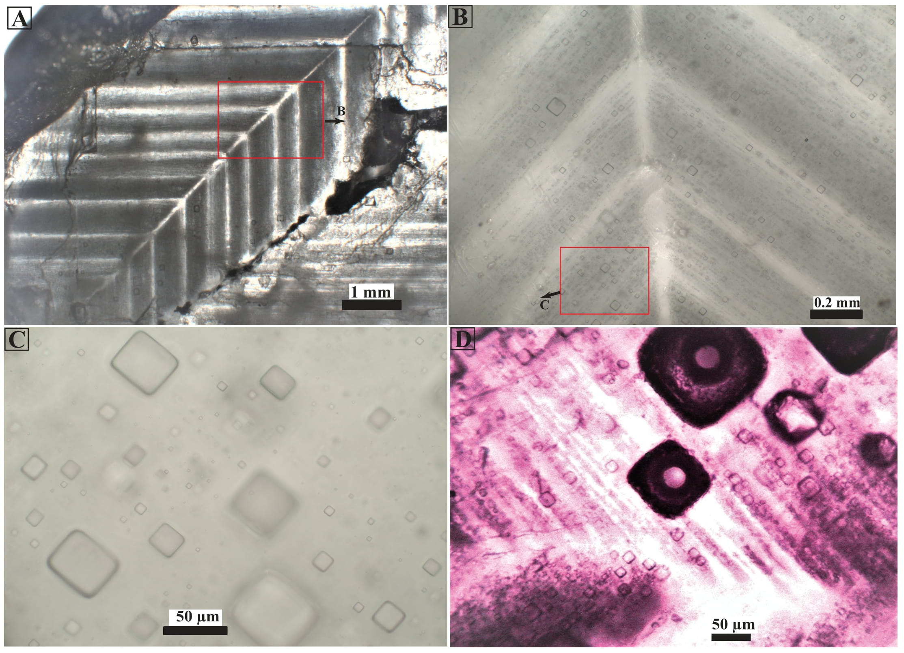

Fluid Inclusions in Halite as Archives of Ancient Seawater Chemistry
Fluid inclusions in marine halite are micrometer-scale (picoliter volumes) droplets of evaporated seawater sealed inside the salt as it grew, and they preserve the most direct record of ancient ocean chemistry available. I developed a combined LA-ICP-MS and cryo-SEM-EDS technique and measured the major, minor, and trace elements in single fluid inclusions with detection limits as low as 1 ppb (Weldeghebriel et al., 2020). Applying it to more than 1,300 inclusions from 32 marine evaporite basins, I built records of seawater Mg/Ca, [Ca²⁺], [SO₄²⁻], [Sr²⁺], and [Li⁺], and δ⁷Li over the past 550 million years (Weldeghebriel et al., 2022, 2023; Weldeghebriel and Lowenstein, 2023; Weldeghebriel et al., in review).
These records are dominated by ~100-Ma oscillations that co-vary with major Earth system transitions, including the mineralogy of marine carbonate shell-building organisms (aragonite vs. calcite), potash evaporites (MgSO₄ vs. KCl), greenhouse–icehouse climate oscillations, and eustatic sea level. Icehouse climate intervals are associated with low atmospheric CO₂, greater subaerial exposure of continental shelves, high seawater Mg/Ca ratios, [SO₄²⁻] and δ⁷Li, low seawater [Ca²⁺], [Sr²⁺], [Li⁺], widespread aragonitic reef-builders and skeletal algae, and the deposition of MgSO₄-type potash minerals in marine evaporite basins. Greenhouse climate intervals show the opposite pattern: elevated atmospheric CO₂, widespread continental flooding, low seawater Mg/Ca ratios, [SO₄²⁻] and δ⁷Li, high seawater [Ca²⁺], [Sr²⁺], [Li⁺], predominantly calcitic marine precipitates, and KCl-type potash evaporites.
